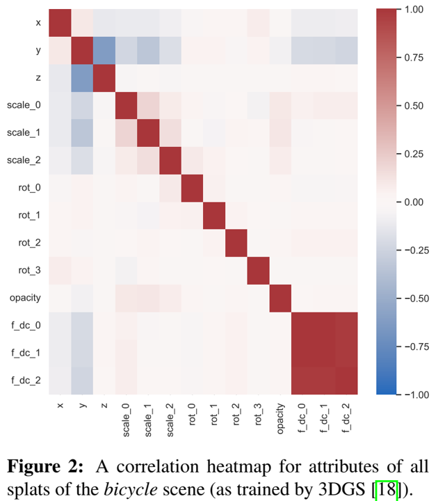

论文阅读四十七：3DGS.zip:3D高斯泼溅压缩方法综述
摘要
3D 高斯泼溅（3DGS）已成为实时辐射场渲染的前沿技术，提供质量和速度的先进性能。3DGS将场景建模为三维高斯的集合，或“泼溅”，以及额外的属性优化以符合场景的集合和视觉特性。尽管它在渲染速度和图像保真度中的优势，3DGS受到其显著的存储和内存需要的限制。这些高需求使得3DGS对于移动设备或耳机不实际，减少它在计算机图形学重要领域中的应用。为解决这些挑战，并促进3DGS的实用，该先进报告（STAR）提供综合和细致的关于3DGS更加有效的压缩和压实技术的检测。我们分类当前方法为压缩技术，旨在以最小数据量获得的最高质量，和压实技术，旨在使用最少的高斯取得最优质量。我们介绍了所分析方法背后的基本数学概念，以及关键的实现细节和设计选择。我们的报告深入讨论了这些方法之间的异同，以及它们各自的优缺点。我们根据关键性能指标和数据集建立了比较这些方法的一致标准。具体而言，由于这些方法是在短时间内并行开发的，目前还没有全面的比较。这项调查首次提出了评估3DGS压缩技术的统一标准。为了促进对新兴方法的持续监测，我们维护了一个专门的网站，该网站将定期更新新技术和对现有发现的修订 https://w-m.github.io/3dgs-compression-survey/ 。总体而言，该STAR为有兴趣探索这一快速增长领域的研究人员提供了一个直观的起点。通过全面分类和评估现有的压缩和压缩策略，我们的工作推进了3DGS在计算约束环境中的理解和实际应用。
引言
计算机图形学是一个不断发展的领域，致力于更真实、更详细地表示世界。这一过程中的关键里程碑包括20世纪60年代引入光栅图形，20世纪80年代开发光线追踪以增强真实感，以及21世纪初采用实时GPU渲染，从而改变了游戏和交互式应用程序。逼真的3D世界表示仍然是一个至关重要且雄心勃勃的目标，通常被认为是图形技术未来的“圣杯”。表示现实世界的一种方法是用计算机图形学方法从头开始构建它，而另一种是扫描和重建现实世界的场景。计算机视觉界在神经辐射场（NeRFs）[33]方面取得了重大进展，这是一种新的场景表示方法，利用神经网络通过预测空间中每个点的颜色和密度来表示体积场景。NeRF为渲染设定了新的质量标准，极大地推动了3D渲染和新颖视图合成的研究。然而，像NeRFs这样的隐式模型也带来了固有的挑战。它们是计算密集型的，因为必须通过沿光线查询每个像素来对单个图像的网络进行数十亿次评估。这使得它们难以操作，并使场景元素的直接编辑变得复杂。即使有像Instant NGP[36]这样的进步，它为辐射场提供了更高的训练和渲染速度，但这种表示仍然是隐含的，限制了其在实际应用中的灵活性。
3D高斯泼溅（3DGS）[18]已成为NeRF的明确替代方案，其质量接近ZipNeRF[5]的最先进NeRF方法，同时允许对场景元素进行明确控制。3DGS使用高斯泼溅通过在整个体积中分布一组高斯椭球体（或泼溅）来表示场景。这些泼溅近似于表面和体积，提供了一种高效的渲染方法，并允许更直接的场景操作和编辑。3DGS建立在早期计算机图形学关于飞溅技术的工作之上[44]，例如EWA飞溅[52]，这为基于点的渲染方法奠定了基础。3DGS的一个关键优势是它能够处理复杂的视觉效果，如视图相关的照明和透明度，这对于实现真实世界场景的准确和视觉上令人信服的表示至关重要。作为一种涉及高斯椭球的显式表示，3DGS是可编辑的，可以与其他表示（如纹理网格）组合在一起，纹理网格因其灵活性、可编辑性和与现有渲染引擎的兼容性而在游戏和电影等行业得到广泛应用。通过支持透明度和视图相关效果等功能，3DGS增强了3D场景录制的多功能性。
此外，3DGS支持在高端GPU上进行实时渲染，为在不久的将来在移动和VR设备上更广泛地使用应用程序创造了乐观的前景。它的简单性也有助于其可访问性：3DGS格式使用一个简单的渲染器，具有多个开放实现和一个基本的.ply文件格式[42]，可以由许多编程语言的库或实现读取和写入，使3DGS从发布之日起即可访问。这种简单性推动了各个领域的快速采用[46]，使3DGS成为研究人员和从业者的一个有吸引力的选择。然而，3DGS的早期实现存在严重的文件大小挑战[39]。以完全精确的方式存储所有属性通常会产生数GB的文件，这推动了一股专注于压缩技术的研究浪潮。3DGS文件的压缩提供了几个好处：它允许在较慢的连接上更快地传输，通过降低内存需求在低端设备上进行渲染，并支持创建更大、更复杂的场景，特别是在视频游戏开发中。因此，压缩有着强烈的动机，导致了一场持续的竞赛，以发现平衡现实主义和计算效率的最有效技术。
紧凑场景表示的目标是在视觉真实感和高效存储之间实现最佳平衡。虽然 NeRF 将压缩作为其基于神经网络的表示的一个组成部分，但 3DGS 需要显式致密化 - 添加更多高斯碎片来填充细节 - 并进行修剪 - 删除冗余碎片以优化内存使用和性能。尽管存在这些挑战，3DGS的显式特性使其在记录现实世界场景方面特别有效，尤其是它能够捕捉微妙的照明效果和透明度。
本调查概述了为实现紧凑的3DGS表示而开发的不同技术，总结了许多并行工作并评估了它们的有效性。通过研究这些方法，该调查指导了未来的研究和应用，帮助社区确定了需要进一步探索的成功方法和领域。用于压缩3DGS的许多技术都是对经典方法的改编，专为高斯泼溅量身定制，而其他技术则引入了全新的方法来减少数据大小。
社区一直在缩小3DGS和NeRF之间压缩效率的差距，这可能是目前的最佳基准。通过提供全面的概述，我们协助研究社区将成功的压缩技术合并为3DGS的最佳解决方案。最终，为压缩3DGS开发一个简单、直接的标准将促进计算机图形学社区的更广泛采用，使其更适合不同的应用。这样的标准将确保兼容性、易用性，并鼓励进一步的创新，帮助3DGS在各种用例中变得像纹理网格一样无处不在和实用。
本次调查范围
在这份最新报告中，我们重点关注 3D 高斯泼溅 (3DGS) 表示的优化技术，旨在优化内存使用，同时保持视觉质量和实时渲染速度。我们专注于压缩和压实方法。我们对各种压缩技术进行了全面的比较，并以表格形式总结了最常用数据集的定量结果。具体而言，我们旨在确保透明度并为所包含方法的可重复性奠定基础。此外，我们还对每个流程进行了简要说明，并比较和讨论了主要的压缩和压实方法。我们并没有涵盖所有现有的 3DGS 方法和应用，而是专注于优化 3DGS 表示的大小或内存占用的技术；有关 3DGS 方法和应用的更广泛概述，我们请读者参阅 [13, 46]。虽然我们包含了神经辐射场 (NeRF) [33] 压缩和 3DGS 压缩之间共享的常用方法，但我们引导读者参阅 [9, 24] 以了解 NeRF 特定的压缩方法。
3D高斯泼溅（3DGS）基础
3D高斯泼溅[18]引入实时辐射场渲染的新方法，取得最先进的表现质量和渲染速度。该技术涉及将场景描绘为3D高斯，称为泼溅，的集成，优化用于对齐场景几何和视觉特征。
静态3D高斯泼溅场景的训练，利用一组图像作为输入，结合从运动结构（SfM）导出的校准相机，其产生稀疏初始点云。对于产生的稀疏云内的每个点，3D高斯分布初始化如下：
每个3D高斯由其59个属性特征化：
- 位置（ ）：3D向量表示世界空间中的x,y和z坐标；是高斯的均值。（3属性）
- 协方差矩阵 （ ）：该协方差矩阵，表示泼溅的方向和大小，可以分解为沿着x,y,和z轴的缩放S(3属性)和旋转R，一个四元组，具有4个组分。缩放参数使用指数激活。（7属性）
- 不透明度（ ）：单一标量值。使用sigmoid激活约束该值的范围到 [0,1)。（1属性）
- 颜色 （c）：视图相关的颜色，由球谐系数（SH）表示。需要一阶球谐函数来赋予泼溅颜色，并分为 3 个通道 (R,G,B)。在.ply点云格式中表示为 。通过更高的SH度支持额外的视图相关颜色。3DGS建议使用3度，因此每个颜色通道增加15个系数。（3个rgb x 16个系数=48个属性）
图1显示了自行车场景所有泼溅的不透明度和第一缩放属性的直方图（由3DGS训练[18]）。在将值传递给渲染器之前，会应用它们的激活函数：sigmoid用于不透明度，指数用于缩放。我们可以看到一个非常低不透明度泼溅的峰值，表明潜在的候选泼溅将从场景中删除（见图5）。在缩放直方图中，我们可以看到很少有大的泼溅，这是应用自适应密度控制的效果。附录A中显示了同一场景的其他直方图。
3D 高斯泼溅的渲染是通过将其从三维空间投影到二维图像平面来实现的。每个三维高斯变换为二维高斯，其足迹由其协方差矩阵和相机的视图变换参数得出。对于每个像素，颜色通过阿尔法混合进行聚合，每个高斯的贡献根据其深度顺序进行混合。最终，像素的颜色（表示为C）如方程式（2）所示确定：
在这种情况下，N表示在像素处重叠的深度排序高斯集， 是颜色， 是第i个高斯的不透明度。该方程确保高斯分布以适当的顺序混合，其中位置较近的高斯分布对生成的像素颜色产生更显著的影响。在整个训练或优化阶段，高斯函数的位置、大小（由协方差矩阵表示）、不透明度和颜色被系统地细化，以最佳地对应于输入视图。可微分渲染用于计算梯度，这允许调整高斯参数，使渲染图像与训练图像对齐。
3DGS压缩与压实基础
虽然高斯飞溅场景可以有效地实时渲染，但它们通常对内存消耗有很高的要求，需要高效的压缩来存储大型环境。对于图像、视频或音频等其他媒体数据，存在不同的编码策略来显著减小数据大小。通常，编码方法分为无损编码和有损编码。对于无损编码，通过利用个体符号的不同概率来减少冗余。这种熵编码可以获得，例如，使用Huffman[16]或算术编码[1]。对于相关源，可以通过在熵编码之前对符号进行适当的预测或变换来进一步提高编码效率。然而，根据源统计数据，无损编码通常仅限于2倍左右的适度压缩。当容忍解码数据中的小偏差时，可以预期更高的编码效率。有损压缩的目标是消除人类无法感知但需要额外比特进行编码的数据中的无关性。将预测或变换后的符号量化为更少的码字是一种标准方法，无论是标量值还是矢量量化中的整个矢量（见第3.1节）。然后，目标是调整和移动量化误差，使其不可见。

例如，图2显示了3DGS提供的自行车场景所有泼溅属性的相关热图[18]。泼溅的基色的颜色通道近乎完全相关，这可能是由于在这个自然场景中亮度对色度变化的主导作用。这种显著的相关性表明了联合编码基色通道的可行性。单个缩放属性之间以及缩放和不透明度之间存在进一步的相关性，这可以在压缩中加以利用。附录A中提供了包括所有球面谐波属性的完整相关图。
除了标准编码技术外，高斯泼溅技术还提供了许多修改数据的机会，以支持更高效的编码。原因在于高斯分层结构中的不同歧义性（ambiguities）。不同的泼溅排列可以产生相同的视觉外观，但其压缩性却有所不同。这可以利用于考虑训练和场景优化中的额外损失来限制比特率，同时保持视觉质量。在接下来的部分中，我们将首先介绍高斯泼溅场景压缩和压缩的几个概念，而第4节将深入探讨当前技术状态下的各个方法的细节。
矢量化（Vector Quantization）
矢量化技术时许多压缩策略的核心，目的是通过将类似数据点分组到一起，并使用共享近似表示它们，来减少数据复杂度。具体地，原始高维数据集被划分为集群（clusters），每个集群由代表性特征近似。该过程依赖于如K均值[28,30]或LBG[26]等算法，迭代地分配数据点到集群，最小化不同向量及其分配质心间的距离。这导致了码本的形成。数据压缩是通过用码本中最接近的代表向量的索引替换每个原始向量来实现的。图3显示了从无组织高斯属性开始，经过聚类、创建码本和矢量量化的最终结果的顺序过程。量化表示的质量在很大程度上取决于码本设计和所使用的聚类算法。设计良好的码本将最大限度地减少量化带来的误差，同时最大限度地提高压缩效率。
量化过程可以同时对整个多维向量执行，也可以将数据空间的各个维度视为单独的量化任务。后一种情况允许更灵活地处理不同的数据属性，特别是对于不同数据属性需要不同精度级别且具有不同分布和冗余级别的应用程序。本质上，矢量量化算法在某些优化标准下改进了一小组矢量以表示更大的矢量集。这会带来显着的压缩增益，当数据表现出冗余或数据丰富的应用程序时，VQ 非常高效，在这些应用程序中，可以接受轻微的精度损失以换取数据大小的显着减少。因此，这些方法在各个领域都发挥着至关重要的作用，从信号处理和图像压缩到新兴的 3D 数据表示领域，以压缩复杂数据集，同时保持与原始数据集的接近。特别是，它对于压缩 3D 高斯溅射 (3DGS) 数据非常有效，其中位置、半径、颜色或球谐函数等属性通常高度冗余并表现出自然的聚类趋势。
结构化和降维
虽然矢量量化侧重于通过将属性编码到共享簇中来减少冗余，但另一种观点是通过结构组织和上下文冗余利用来实现压缩。八叉树、哈希网格和自组织网格等方法旨在在空间上重塑和重组数据，而不是单独编码属性。这些技术按层次或围绕代表点组织场景元素，实现了跨区域高效重用相似属性。通过构造高斯分布来利用上下文关系（如接近度、颜色或形状），压缩变得更加关注数据的全局排列，减少了独立存储单个属性的需要。从以属性为中心的编码到结构压缩的这种转变突显了通过空间一致性和冗余管理实现紧凑表示的潜力。
分层和自适应表示
这些方法通过利用空间结构来组织3D高斯分布，从使用八叉树进行划分到使用锚点对相似特征进行分组，从而实现了更紧凑、更高效的表示。
八叉树（Octrees）是一种用于计算机图形学的空间划分技术，可以有效地表示点云和体积模型等3D数据[32]。它们已成功应用于点云压缩[41]。由于3DGS场景实际上是具有额外属性的点云，因此使用八叉树进行3DGS变得简单明了。八叉树递归地将3D空间细分为更小的立方体，通过关注非空区域来实现高效的内存分配。此外，可以参考子立方体的坐标来获得更小的平均位长。在 3DGS 中，八叉树有助于仅将内存分配给场景中已占用的部分，跳过空白区域，在保留细节的同时减少内存使用量，使其成为大规模场景的理想选择。
基于锚点的表示使用锚点作为代理来预测相关高斯核的属性。与将空间划分为层次网格的八叉树不同，锚点通过将高斯分布与代表点相关联来对其进行分组，从而在不进行严格空间细分的情况下实现高效压缩[29]。通过对3D场景进行体素化来初始化锚点，并为其分配上下文特征、位置、缩放和可学习偏移。通过从这些锚点中导出高斯属性而不是单独存储它们，可以减少冗余，从而减少内存使用。这种方法在概念上与第3.1节中介绍的矢量量化中使用的码本有关，其中共享表示在保持高保真度的同时有效地降低了存储要求。
哈希网格辅助上下文建模利用受 InstantNGP [36] 启发的多分辨率哈希网格来有效地表示 3D 高斯溅射中的空间关系。Instant NGP的多分辨率哈希编码使用紧凑的哈希表来存储可训练的特征向量，这些特征向量在训练过程中经过优化，与密集的网格编码相比，可以用更少的参数来表示复杂的空间细节。此方法通过调整哈希表大小、特征向量大小和分辨率数量等参数，在内存、性能和质量之间进行权衡。与显式管理冲突的传统空间编码不同，哈希网格方法允许神经网络隐式处理这些冲突，简化了实现并减少了计算开销。对于3DGS，哈希表中存储的特征可以被解码为泼溅的属性。哈希网格在将内存分配给高重要性区域方面特别有效，正如Instant NGP所证明的那样，它以最小的参数实现了小而高质量的辐射场。这使得它们成为3DGS压缩的一个非常有效的工具。
降维技术
降维是降低3DGS模型复杂性和提高效率的关键主题。这些技术的目标是将3D数据转换为更容易压缩和管理的低维形式，同时仍然保留基本的空间关系。
Z阶曲线，或Morton排序，通过交织多维坐标值的位来创建单个一维索引，有效地将多维数据映射到线性序列中，同时保持空间局部性。通过按照高斯函数沿 Z 阶曲线的位置对其进行排序，可以利用空间相干性来提高游程（run-length）或预测编码技术的效率。这使得 Z 阶曲线对于空间索引和为泼溅创建连贯的顺序很有用。在3DGS中的稀疏点云环境中，Z阶曲线用于根据其位置对泼溅进行排序，这是一种内存高效的方法，因为它避免了将存储分配给空白区域。然而，这种方法在维护邻域关系方面存在局限性：当线性映射时，高维邻域并不总是很接近，这会影响依赖于真实空间接近度的操作效率。更复杂的方法，如Hilbert曲线[7]，有时可以为这些数据集提供更好的局部性，通过确保空间邻居更有可能在线性映射中保持邻居，提高空间索引的效率。
自组织高斯是一种将高维高斯参数映射到二维网格中的方法[35]。该想法基于SelfOrganizing Maps的概念[< href=“http://cis.legacy.ics.tkk.fi/research/reports/biennial02-03/cis-biennial-report-2002-2003-8.pdf”>22]，这是一种无监督学习模型，将高维数据投影到低维网格上，通过竞争学习保持数据点之间的拓扑关系。与Z曲线的动机相似，这种2D表示能够使用标准图像压缩技术，利用感知冗余并确保相邻泼溅之间的局部平滑。虽然Z阶曲线很好地保留了局部邻域，但这可能会因3DGS的稀疏点云而失效。排序到局部平滑的2D网格中可确保两个维度上的邻居相似，从而提供更平滑的结果。这不仅允许使用游程（run-length）或预测编码技术，而且允许使用图像编码方法来有效地存储结果。与强制固定顺序的Z阶曲线不同，自组织高斯表示针对每个场景进行了优化，允许有效地对所有维度的邻居进行建模。通过将属性组织到共享一致2D布局的多个数据层中，该技术提供了原始3D场景的高度可压缩和高效表示。
高级属性压缩技术
除了结构化和降维之外，通过高斯属性的自适应压缩可以获得显著的收益。这些方法侧重于减少位置、旋转、颜色和密度等属性的熵，同时保持高保真渲染能力。
区域自适应分层变换（RAHT）是一种自适应变换技术，旨在有效降低3D高斯泼溅中高斯属性的熵。RAHT的主要动机是通过分层转换空间数据来捕获相邻属性之间的相关性，这使得它们更适合熵编码。RAHT 源于点云压缩，其中类似的技术利用局部相关性来有效地压缩几何和颜色信息。RAHT的工作原理是迭代地将空间域划分为分层区域，转换这些区域内的属性以最大限度地减少冗余。此过程对于颜色、密度和其他高斯属性等通常表现出强局部相关性的属性特别有用。通过有效地捕捉这些相关性，RAHT最大限度地减少了冗余，允许更紧凑的存储，同时保持场景的基本空间和视觉信息。
总结和联系
所讨论的方法形成了一个工具包，可以实现紧凑高效的3D高斯泼溅，每种方法都有其独特的优势。Z曲线和2D网格映射降低了维度复杂性，但在稀疏数据集中，Z阶曲线可能会失去空间连贯性。自组织高斯算法通过确保跨维度的平滑性来克服这一点，使其适合使用图像编码进行压缩。八叉树自适应地仅将内存分配给占用的区域，优化复杂场景的资源使用。基于锚的方法将高斯分布分组在代表点周围，有效地减少了冗余，类似于矢量量化。哈希网格添加了自适应的多分辨率索引，平衡了内存效率和渲染质量。
高级属性压缩，如RAHT，通过层次变换捕获相关性，有效地减少冗余。RAHT起源于点云压缩，通过利用局部相关性来帮助保留基本的场景信息。这些方法共同实现了高效、高质量的3D高斯泼溅，适用于受限环境中的实时应用。空间结构、降维和属性压缩形成了一种全面的3D场景表示方法。
属性修剪
属性修剪是指有选择地减少与每个高斯相关的属性，如球谐函数（SH），以优化内存使用和计算效率。在3DGS中，球面谐波通常用于编码复杂的照明和颜色信息。SH系数的存储和处理可能会变得昂贵，特别是随着精度的提高。例如，对RGB数据采用高达3度的SH可能会导致48个系数（每个通道16个），消耗单个高斯所需存储大小的81%（59个属性中的48个）。
为了解决这个问题，属性修剪技术动态调整每个高斯函数的SH系数数量。与在整个场景中应用统一水平的SH精度不同，SH的度根据每个高斯函数的具体要求进行定制。在场景中不太复杂的区域，一些高斯只需要一个SH度（基本RGB颜色），而更复杂的区域需要更高的SH度来进行更详细的表示。
也可以完全放弃球面谐波，并使用其他方法对视图相关的效果进行建模，例如类似NeRF的MLP或经典的计算机图形着色[17]。这些方法可能使用比三度球谐函数少得多的属性，但缺点是需要自定义渲染，而且可能较慢。
压实
在3D高斯泼溅（3DGS）中实现压实的关键工具是自适应密度控制（ADC）。ADC在优化过程中动态管理高斯的数量，根据场景要求调整其密度，而不是依赖于固定数量的元素。它根据高斯对场景的贡献添加或删除高斯人，确保只保留最基本的元素。
通过评估梯度、像素覆盖率和显著性图等标准，ADC智能地确定是否应该克隆、分割或删除高斯分布。这确保了在最需要的地方（如高频区域）分配额外的高斯分布，同时修剪冗余或影响较小的高斯分布。图4展示了高斯修剪过程。基于上述标准，选择高斯并将其从场景中删除。
图5显示了高斯数（在本例中按不透明度过滤）如何影响渲染场景的视觉质量。虽然560万到410万高斯之间的视觉质量损失很小，但你已经可以发现自行车辐条渲染的变化。这在300万高斯上变得更加明显。在更少的高斯（100万）的情况下，自行车重建变得透明，草地重建也受到了影响。
ADC在训练和渲染过程中动态运行，不断优化场景表示。随着场景的演变，ADC确保了高效的高斯分配，随着时间的推移，模型会变得更加紧凑和高质量。
三维高斯泼溅压缩压实的有效策略
随着3D高斯泼溅（3DGS）作为实时场景渲染的一种突出方法的发展，其越来越多的采用受到大量存储和计算要求的挑战。本节介绍了两种基本的优化策略：压缩（第4.1节）和压实（第4.2节）。压缩通过采用矢量量化等方法来减少内存使用，矢量量化对相似的高斯属性进行聚类以减少冗余，结构化表示将高斯组织成更紧凑的形式，如网格或锚点。另一方面，压实侧重于优化高斯数和分布，确保只保留最基本的元素，同时减少不必要的数据。图6说明了压缩（属性压缩和结构化表示）和压实是如何相交的。这里的压实包括高斯修剪和致密化方法。这些策略共同提高了3DGS的效率，使其更适用于各种应用和设备。
压缩
3D高斯泼溅压缩的主要目标是保持原始信息的高保真度，同时大幅减少数据量。这一目标是通过解决导致大量内存使用的主要因素的不同策略来实现的。3DGS场景由大量的高斯组成；因此，最小化内存占用的最明显方法是减少所使用的高斯数（见第4.2.2节）。在进一步检查单个高斯核时，与每个高斯核相关的众多属性需要考虑这些属性的有效表示。最后，表示3D场景的高斯分布通常不是随机分布的，而是表现出空间关系和模式。可以利用这种固有结构更有效地组织和压缩高斯数据。大多数压缩方法都集成了这些不同的方法。
在以下章节中，我们首先讨论表示高斯属性的有效方法（第 4.1.1 节），然后讨论高斯的结构化表示（第 4.1.2 节）。
高斯属性的高效表示
由于高斯及其相关属性的数量众多，3D高斯泼溅需要大量的存储空间。更有效地表示这些属性可以减轻存储需求，而不会明显降低质量，从而实现压缩的目标。
基于许多高斯分布具有相似属性的假设，可以使用矢量量化（VQ）对其进行量化。最常见的量化属性然后基于K-means存储在码本中，如[11,23,37,38,39]所示。在LightGaussian[11]中，作者将球谐函数的VQ与显著性得分相结合，以省略具有较高显著性的球谐函数上的VQ。类似地，[38]引入了一个灵敏度参数，该参数描述了重建质量对高斯属性变化的灵敏度。然后，该灵敏度度量用于高斯属性（例如球面谐波、形状）的灵敏度感知VQ。在[47]中，作者将大于0的SH系数归类为不重要，因此可以通过VQ进行压缩。此外，对于关键属性（不透明度、尺度、欧拉角和0度SH系数），Xie等人在量化前使用RAHT降低了熵。RDOGaussian[43]使用带有码本的熵约束VQ来量化协方差和颜色参数用于更紧凑的表示法。HAC[8]使用带有相关高斯的锚结构，并引入了自适应量化模块（AQM），该模块旨在动态选择量化步长，以促进锚属性的熵编码。EAGLES[14]的研究人员采用了一种方法，通过利用与每个属性相关的潜在向量来量化旋转、视图相关颜色和不透明度等属性。该潜在向量与多层感知器（MLP）解码器集成在一起，这有助于将潜在表示解码为属性值。为了确保训练过程中的可微性，保留了额外的潜在近似值。然后，在梯度传播之前，利用直通估计器（STE）对潜在近似值进行四舍五入。
如第2节所述，高斯泼溅有59个属性，其中大多数与颜色表示有关。其中，球面谐波（SH）系数包含三个SH带上的48个属性。值得注意的是，48个SH系数中有45个负责描绘与视图相关的颜色。为了减少存储，属性修剪SH系数是一种常见的策略。鉴于此，[39]引入了一种自适应的SH调整机制。作者主张计算每个像素和每个视图的平均透射率。在每个视图变化最小的情况下，这允许将SH系数减少到较低的频带或完全去除，从而显著减少与每个高斯泼溅相关的内存占用。
自组织高斯 [35] 提供了一个消融实验，表明完全不使用任何高阶球谐函数的训练场景是可能的，并且仍然可以以更小的存储空间实现具有竞争力的质量。在减少 SH 系数数量的初步概念的基础上，LightGaussian [11] 提出了一种知识蒸馏方案，并伴随着伪视图增强，以有效地将高阶系数中的信息封装成更简洁的形式。
需要注意的是，每当移除一个波段或一个度的球面谐波时，颜色表示的较高频率分量也会被消除，这必然会导致与视图相关的效果中细节的丢失。这种减少虽然有利于提高存储效率，但不可避免地会牺牲一些信息，而这些信息原本可以捕捉不同视点之间光照和阴影的细微变化。
另一种减少内存的直接方法是对不需要高精度的属性使用较低的位深度表示（例如，16位半浮点数而不是32位浮点数）。在SOG[35]中，作者根据百分位数阈值剪裁了各种属性范围，包括RGB、不透明度和球面谐波，以确保模型之间的一致归一化。剪切后，他们通过四舍五入到预定义线性范围q内的最接近值来量化这些属性，坐标为 ，比例、不透明度和旋转为 ，SH为 。Fan等人[11]量化了选择性的球面调和、位置、形状、旋转和不透明度属性。此外，使用MesonGS[47]中的LZ77或[35]中的JPEG XL等编解码器打包属性可以减少剩余的存储大小。
高斯的结构化表示
在3DGS的普通方法中[18]，最终的高保真场景通常由数百万无序的高斯组成。除了如前一节4.1.1所述通过利用属性内的相似性来有效地表示单个高斯的属性外，一些压缩方法还利用相邻高斯之间的相关性并找到结构化表示，为压缩开辟了新的途径。
构建场景三维高斯分布的一种方法是Scaffold-GS[29]中引入的基于锚点的表示法。这些锚点是附近高斯星团的代表点。这些属性与锚点相关联，而不是为每个单独的高斯函数存储属性。然后，神经网络根据锚点的属性预测每个集群内高斯的属性。这种方法有效地减少了表示场景所需的参数总数。在HAC[8]中，通过包含哈希网格辅助上下文来增强基于锚点的表示。主要概念涉及同时学习结构化、紧凑的哈希网格，用于锚点属性的上下文建模。对于每个锚点，锚点的位置用于查询哈希网格并检索插值哈希特征，该特征随后预测锚点属性的值分布，以帮助熵编码实现高效表示。为了利用相邻高斯颜色属性之间的相似性，并消除为每个高斯存储属性的需要，Compact3DGS[23]建议使用哈希网格，然后使用专门用于视图相关颜色属性的小型MLP。位置被输入到哈希网格中，随后将得到的特征连同观察方向提供给MLP，以检索颜色。
SOG[35]采用了另一种结构化方法，gsplat[19]也使用了这种方法，其中非结构化高斯被映射到结构化的2D网格上，以在空间上紧密组织具有相似属性的高斯，从而增强属性值的平滑度。这种配置允许使用标准图像压缩技术进行高效压缩。为了进一步提高平滑度和压缩性，可以在训练过程中添加平滑正则化项，以促进网格上高斯的局部平滑配置。这种配置允许使用标准图像压缩技术进行高效压缩。为了进一步提高平滑度和压缩性，可以在训练过程中添加平滑正则化项，以促进网格上高斯的局部平滑配置。
CompGS[37,38]中的作者提出了一种组织非结构化3D高斯分布的方法，即根据量化索引之一对其进行排序，然后使用游程编码（RLE）进行存储。
IGS[45]提出了一种混合方法，将显式点云与隐式特征嵌入相结合，重点关注多分辨率三平面架构内高斯属性的编码。该结构利用不同分辨率的2D特征网格来表示场景空间，增强了空间相关性，并允许连续表示空间域。采用渐进式训练策略，从较低级别的粗略预测开始，通过较高级别的三平面对其进行细化，从而得到紧凑高效的3D场景表示。
在MesonGS[47]中，八叉树被用来实现几何结构的压缩，特别是3D高斯的3D位置。
压缩方法的定量比较

本节对四个数据集的3DGS压缩方法进行了比较分析：Tanks和Temples、Mip-NeRF 360、Deep Blendingand、Synthetic NeRF。第5.1节提供了有关数据集的更多详细信息。如表1所示，用于评估每种压缩方法性能的指标（见第5.2节）是PSNR、SSIM、LPIPS和以兆字节为单位的模型大小。我们计算了一个额外的排名，表示所有可用数据集中方法的平均排名。为了确定压缩数据集的排名，质量指标 PSNR、SSIM 和 LPIPS 的排名与模型大小具有同等权重。因此，每个质量指标对排名都有六分之一的贡献，而模型大小占剩下的一半：
总体方法排名是通过对所有可用数据集的数据集排名进行平均来计算的。这种方法确保了数据不完整的方法被公平地纳入整体比较中。使用最小运算符来解决度量排名中的平局，为组内的所有方法分配最低排名，而后续排名则跳过平局方法的数量。
评估的方法显示文件大小存在显著差异，一些方法以牺牲视觉质量为代价实现了高压缩率，而另一些方法则在压缩和保持高保真度之间取得了平衡。虽然我们提出的排名将HAC-highrate放在首位，但数据集和质量指标之间的高度差异表明，没有一种压缩策略是胜出的。根据应用和目标，应考虑不同的方法。如果文件大小是主要问题，那么HAC-lowrate、IGS low和SOG w/o SH是性能最好的压缩方法，可以实现10 MB以下的文件大小和可接受的视觉质量。HAC-lowrate[8]特别有效，提供了强有力的压缩（8.5 MB），质量损失最小。SOG w/o SH[35]实现了类似的压缩（9.3 MB），但保真度略低。HAC-highrate[8]在压缩和质量之间提供了极好的平衡，保持了相对较小的大小和较高的PSNR，使其成为一种多功能的选择。IGS high[45]在合成NeRF和深度混合数据集上提供了更高的PSNR，但需要更大的文件大小，适用于优先考虑质量而非压缩的情况。
图7直观地展示了不同数据集上各种3DGS压缩方法的模型大小和PSNR之间的权衡。一些方法有额外的数据点，为清楚起见，这些数据点未包含在表中。该图说明了模型大小和PSNR之间的权衡，并强调了较小的文件大小通常会导致较低的PSNR，显示了压缩效率和视觉质量之间的平衡。附录B中提供了SSIM和LPIPS的进一步比较图以及相应的压实图。
压实
三维高斯泼溅（3DGS）中的压缩是指优化三维空间中的高斯核分布，以准确表示场景特征，同时保持计算效率。初始核集往往难以捕捉复杂的细节，尤其是在高频区域或几何复杂的区域。3D高斯泼溅（3DGS）中的压缩利用自适应密度控制（ADC）来动态管理高斯分布和密度。ADC可大致分为两种关键方法：致密化和修剪。这种分类基于每种方法的主要目标：致密化技术侧重于在最需要高斯分布的地方选择性地添加高斯分布，以提高场景保真度，而修剪技术侧重于去除对场景没有有效贡献的高斯分布，避免过度重建和效率低下。首先介绍第4.2.1节中的致密化和第4.2.2节中的修剪，概述了每个过程如何有助于优化表示。
虽然以下大多数方法并不是专门为了减少3DGS场景的内存占用，但它们隐含地这样做了，因为它们在不使用更多高斯基元的情况下提高了场景的质量。因此，在质量相似的情况下，这些方法需要更少的高斯分布，因此也需要更少的内存。请注意，由于评估不完整，本节中提到的一些方法没有包括在表2中，特别是在高斯数方面，这将它们排除在比较之外。
致密化
这些方法使用不同的标准来确定在哪里以及如何引入新的高斯。例如，颜色线索高效致密化方法[20]利用与视图无关的球面谐波系数来评估颜色线索，细化传统运动结构技术可能难以捕捉精细细节的区域。FreGS[50]通过规范渲染图像中的频率差异来解决过度重构问题，重点关注频域。同时，Pixel-GS[51]引入了像素感知梯度，通过结合来自多个视图的线索来定位重建不足的伪影，从而在致密化决策过程中强调像素级信息。同样，修正高斯泼溅中的密度（RDGS）[6]采用了确定在优化过程中是否应克隆或分割高斯分布的标准。RDGS使用结构相似性函数来解决每个单独高斯的损失，而不是使用每个高斯的累积位置梯度。如果这种损失足够高，高斯分布将在规则的致密化间隔内分裂。
GaussianPro[10]采用了一种不同的方法，通过使用深度图和法线图来指导Gaussian的生长和调整。它利用补丁匹配[3]从相邻像素传播深度和法线信息，并应用几何滤波和选择来识别需要额外高斯分布的像素。MVG-Splatting[25]和Mini-Splatting[12]也采用深度图来增强几何一致性，但具有更具针对性的应用。具体来说，MVG-Splatting仅在场景的近远区域(near and far regions)应用几何一致性，以有效缓解这些关键区域的重建不足，同时避免过度重建的风险。Mini-Splatting在经过几次优化迭代后整合了深度信息。它依赖于初始训练过程来估计深度，需要几次迭代来获得这些信息。这种方法确保了几何精度，同时仍然优化了整体场景表示。Taming 3DGS[31]采用全局评分方法来指导高斯的添加，确保高效致密化。全局得分由1）梯度、2）像素覆盖、3）每个视图的显著性和4）不透明度、深度和比例等核心属性组成。通过计算反映场景结构复杂性和视觉重要性的分数，只有最关键的区域才被高斯分割或克隆，从而实现更有效的场景表示。AtomGS[27]采用了一种不同的方法，即采用类似于原始3DGS的密度控制过程，依赖于位置（缩放）梯度。然而，它通过添加边缘感知损失来提高性能，引导梯度更好地与场景的几何体对齐。虽然它没有用不同的标准明确控制致密化，但它在梯度制导中的改进导致了密度控制结果的改善。
一些致密化方法采用多层次策略以获得更大的灵活性。通过对图像进行下采样或上采样，这种方法生成了多个高斯集，每个高斯集都被精细地调整到不同的分辨率。例如，八叉树GS[40]使用八叉树结构[2]根据细节级别组织高斯。它根据不同的视图选择性地训练高斯，自适应地调整训练级别，以确保基于观察者视角的最佳渲染。
最后，马尔可夫链蒙特卡罗（MCMC）[19]使用了一种完全不同的方法来致密化3DGS场景。他们不是克隆和分割单个泼溅，而是从学习到的概率分布中采样固定数量的高斯分布。具体来说，他们在高斯的位置上添加了一个噪声项，以便在训练过程中进行探索，同时他们还重新生成了高斯，这些高斯在高不透明度的高斯中随机下降到不透明度阈值以下。这样，该方法提高了初始高斯泼溅较少的区域的质量，且高斯泼溅的数量可以直接控制。
修剪
这些技术侧重于识别和删除对场景表示贡献最小的冗余高斯分布，例如那些过大、透明或提供重叠信息的高斯分布。Compact3DGS[23]、RDO Gaussian[43]和HAC[8]引入了额外的掩码参数来正则化高斯的体积，在整个训练过程中使用二进制掩码根据其贡献迭代地消除高斯，如掩码值所示。LightGaussian[11]和EAGLES[14]都使用基于重要性的评分系统来有效地消除不必要的高斯分布。LightGaussian通过评估其对相交像素的影响，为每个高斯分配一个全局显著性得分，修剪那些显著性较低的像素，以提高效率而不影响渲染质量。同样，EAGLES[14]采用了一种简化的方法，通过使用由透射率和不透明度组成的权重来表示每个高斯的重要性，确保在保持整体场景精度的同时去除不太重要的高斯。Papantonakis等人[39]提出了一种基于重叠消除高斯的修剪策略——那些与其他分布有显著重叠的分布被认为是冗余的，并被删除以减少重叠，同时不影响场景的准确性。SUNDAE[48]利用基于图的修剪方法，构建一个图来捕捉高斯之间的空间关系，并应用带限（band-limited）图滤波器来选择性地对它们进行下采样。为抵消该过程中的信息损失，采用卷积神经网络（CNN）来恢复精细细节，确保高效高斯布局和保持视觉质量之间的平衡。
压实方法的定量比较
本节对三个数据集的3DGS压实方法进行了比较分析：Tanks and Temples、Mip-NeRF 360和Deep Blending。数据集的详细描述见第5.1节。如表2所示，使用四个指标来评估每种压缩方法的性能：PSNR、SSIM、LPIPS和高斯数。此外，我们计算了一个总体排名，该排名对所有数据集的方法排名进行了平均。为了确定压缩数据集的排名rankg，质量指标——PSNR、SSIM和LPIPS——与高斯数一起被赋予相等的权重。具体来说，每个质量指标占总排名的六分之一，而模型大小（高斯数，表示为k高斯）占一半：
对于压缩排名计算，压缩方法的排名是通过对所有可用数据集的排名进行平均来计算的，以确保公平比较。
表2强调，最有效的压实方法是那些在保持合理视觉质量的同时尽量减少高斯数的方法。Octree-GS[40]和Mini-Splatting[12]是最有效的方法，使用最少的高斯分布，同时仍然提供有竞争力的PSNR值。这些方法非常适合需要严格内存和计算限制的应用程序。另一方面，Taming3DGS（Big）[31]和GaussianPro[10]等方法以增加高斯计数为代价提供了更高的质量，使其更适合优先考虑视觉保真度而非极端压缩的用例。
更仔细的分析表明，即使是效率排名最高的方法Octree-GS，也无法在所有数据集中实现最佳性能。这表明不同的方法侧重于优化场景的不同方面。例如，Octree-GS在Deep Blending和Tanks and Temples等数据集上表现出色，这些数据集的纹理丰富区域相对稀疏。其多尺度策略能够灵活调整更精细的细节，允许用户手动调整这些区域的分辨率水平。相比之下，Taming3DGS（Big）等方法在纹理密集的场景中表现更好，因为它们强调更高的高斯计数和更丰富的细节捕获。这强调了根据具体应用需求选择压实方法的重要性。
数据集和比较指标
数据集
3D高斯泼溅算法的性能和质量评估通常在多个数据集上进行。这些数据集提供了具有各种属性的3D场景或对象，例如不同级别的细节、照明条件和复杂性，从而可以对算法进行全面评估。
在我们的调查中，我们将Tanks and Temples[21]、Mip-NeRF 360[4]、Deep Blending[15]作为真实世界的数据集，将Synthetic NeRF[34]作为合成数据集。图8显示了每个包含场景的示例图像。从Tanks and Temples中，我们包括“truck”和“train”两个无边界的户外场景，它们有一个中心视角。Mip-NeRF 360数据集也有一个中心视点，但包括室内和室外场景。包括以下场景：“bicycle”, “bonsai”, “counter”, “flowers”, “garden”, “kitchen”, “room”, “stump”, “treehill”。从深度混合数据集中，我们包括“Dr Johnson”和“Playroom”两个室内场景，视点向外。合成场景：“chair”, “drums”, “ficus”, “hotdog”, “lego”, “material”, “mic”, “ship” 来自合成NeRF数据集。
这些场景与3D高斯泼溅（3DGS）[18]发布中使用的场景一致，这使得它们在比较压缩方法时特别有用，因为大多数作者都以它们为基准。虽然在未来的工作中探索更大或更专业的场景是有益的，但目前缺乏可用于此类比较的数据限制了我们的范围。
比较指标
为了评估3D高斯泼溅（3DGS）压缩和压实方法的性能，我们依靠一组完善的指标来评估渲染场景的质量和数据表示的效率。这些指标包括峰值信噪比（PSNR，Peak Signal-to-Noise Ratio）、结构相似性指数（SSIM，Structural Similarity Index）、学习感知图像块相似性（LPIPS, Learned Perceptual Image Patch Similarity）和模型大小（以兆字节或高斯数为单位）。
- PSNR是一种广泛使用的指标，它量化了原始图像和压缩图像在像素精度方面的差异。较高的PSNR值表示更好的保真度和更少的失真。
- SSIM通过考虑亮度、对比度和结构来衡量两幅图像之间的感知相似性。较高的SSIM分数表示参考和渲染场景之间的相似性更接近。
- LPIPS使用一个学习模型来评估感知质量，该模型捕获了类似人类的视觉相似性判断。较低的LPIPS值表示更好的感知质量。
- 模型大小表示为文件大小（MB，1 MB=10002字节）或模型中高斯分布的总数。较小的尺寸反映了更有效的压缩或压实。
测试协议
最初，我们为这项调查编制数据的方法涉及解析来自众多3DGS压缩出版物的各种表。然而，我们随后修改了我们的策略，并要求本报告中引用的出版物的所有作者以标准格式向我们提供数据/结果。
为了确保不同方法之间的一致性和可比性，我们建议作者遵守原始3DGS项目中既定的测试惯例。具体来说，这包括使用Mip-NeRF 360数据集中的所有9个场景，合并额外的场景“花”和“树丘”（见第5.1节），并且只使用坦克和寺庙中的“火车”和“卡车”场景。对于图像评估，应使用最大边长为1600px的全分辨率图像。对于较大的测试图像，需要按照标准的3DGS[18]大小调整方法进行缩小，使最长尺寸为1600px，该方法使用PIL.resize（）函数和双三次重采样。对于3个COLMAP数据集（坦克和神庙、深度混合、Mip NeRF 360），必须选择每8张图像进行测试，特别是索引i中i mod 8 ≡ 0 的图像。对于合成NeRF数据集，作者应遵循数据集提供的预定义训练/评估分割。
讨论
3D高斯泼溅（3DGS）领域取得了快速发展，压缩和压缩技术得到了显著改进，旨在克服传统上与3DGS相关的高内存需求。这份最先进的报告揭示了对这些发展的关键见解，为未来3DGS在实时渲染中的优化和应用奠定了基础。
一个关键的发现是，一个好的压实策略可以改进大多数方法。自适应密度控制，通过致密化和修剪可以显著提高视觉质量，同时减少内存占用。这对于资源受限环境中的应用至关重要，例如移动设备或VR耳机，在这些环境中，内存和处理能力有限，但视觉质量对用户很重要。
结构化表示在实现良好的压缩比方面起着关键作用。基于锚的表示和哈希网格辅助上下文等技术组织高斯数据以减少冗余并提高压缩性。这种方法使3DGS模型保持紧凑，并保持高视觉质量，这对于高效存储和检索大型复杂场景至关重要。此外，矢量量化和基本属性修剪等策略表明，当简单性与对关键优化策略的关注相结合时，可以在不牺牲太多视觉保真度的情况下产生高效的模型。
最后，压缩效率和视觉质量之间的权衡仍然是一个核心挑战。像HAC-highrate这样的方法在实现高质量压缩方面表现出色，但代价是更高的计算开销。另一方面，更激进的压缩技术，如SOG w/o SH，可以显著减少内存使用，但可能会导致明显的质量下降，特别是在需要精细细节的场景中。这种权衡凸显了对灵活解决方案的需求，这些解决方案可以根据应用程序的特定要求进行调整，无论是专注于最小化存储还是最大化视觉真实感。
结论和未来方向
这份最先进的报告揭示了持续改进和标准化3D高斯泼溅（3DGS）压缩和压实技术的重要性，以使其更易于使用和广泛应用。当前的方法为减少3DGS的内存和计算负载提供了有效的解决方案，但在可扩展性、易用性和跨不同平台的适应性方面仍有改进的空间。
最有前景的未来方向之一是将3DGS扩展到动态场景，其中对象和照明条件会随着时间而变化。这一进步将实现实时模拟，并增强游戏和虚拟现实等交互式应用。另一个改进可能是创建支持细节级别（LOD）缩放的多分辨率模型。这种模型将通过允许场景的不同部分根据实时要求以不同的细节级别渲染来优化性能。量化感知训练和跨场景或应用程序共享码本的开发可以进一步提高压缩效率，从而减少冗余和更有效地使用内存。
这些进步将共同帮助扩大3DGS的适用性，使其成为解决计算图形学未来挑战的更通用、更高效的工具。
包含压缩方法的简短总结
在本节中，我们简要概述了本报告中调查的主要压缩出版物。每种方法都提供了独特的方法来解决3D高斯泼溅（3DGS）中的内存和计算效率挑战，重点关注属性修剪、矢量量化和结构化表示等方面。通过利用不同的策略，这些方法实现了压缩比、视觉质量和渲染性能之间的平衡。
下面的总结强调了每种技术的主要创新、它们所解决的具体问题以及它们对推进3DGS压缩的贡献。本节可作为快速参考，帮助您了解每种方法如何融入3DGS优化的更广泛领域，从而更容易确定最适合应用和研究需求的方法。
HAC：用于3D高斯泼溅压缩（HAC）的哈希网格辅助上下文
本文提出了一种哈希网格辅助上下文（HAC）框架[8]，用于通过利用无组织3D高斯分布（锚点）属性和哈希网格特征之间的互信息来压缩3D高斯泼溅（3DGS）模型。使用ScaffoldGS[29]作为基础模型，HAC通过锚点位置查询哈希网格，以预测锚点属性分布，从而实现高效的熵编码。该框架引入了自适应量化模块（AQM）来动态调整量化步长。此外，该方法采用具有可学习掩码的自适应偏移掩码，通过利用Compact3DGS[23]引入的修剪策略，并在所有附加偏移都被修剪的情况下额外删除锚点，来消除无效的高斯和锚点。
gsplat
该方法利用3D高斯泼溅作为马尔可夫链蒙特卡洛（3DGS-MCMC）[19]，将定位和优化高斯的训练过程解释为采样过程，而不是最小化预定义的损失函数。此外，它还结合了Morgenstern等人[35]的论文中提出的压缩技术，该技术将3DGS的参数组织在2D网格中，利用了自然场景中的感知冗余，从而显著降低了存储需求。通过将球面谐波聚类为离散元素并将其存储为FP16值来实现进一步的压缩。该技术在gsplat[49]中实现，gsplat是一个开源库，专为CUDA加速的3D高斯可微光栅化而设计，配备了Python绑定。
具有高效多级三平面表示（IGS）的隐式高斯泼溅
该方法[45]引入了基于泼溅的辐射场的混合表示，其中高斯基元被分为显式点云和隐式属性特征。属性特征使用与基于残差的渲染管道集成的多分辨率、多级三平面架构进行编码。它采用了一种基于层次的渐进式训练方案，用于点云和三平面的联合优化，从粗略的属性开始，用更高层次的细节对其进行细化。在训练过程中，应用空间正则化和自举方案来提高高斯属性的一致性和稳定性。
Compact3D：用矢量量化压缩高斯泼溅辐射场模型（CompGS）
这种方法[37]引入了一种基于K-means算法的矢量量化方法，用于量化3D高斯飞溅中的高斯参数，因为许多高斯参数可能共享相似的参数。只有一个小的码本与每个高斯的码索引一起存储，从而大大减少了学习辐射场的存储，并减少了渲染时的内存占用。此外，通过基于量化参数之一对高斯进行排序，并使用类似于游程编码（RLE）的方法存储索引，进一步压缩索引。为了减少高斯分布的数量，该方法在修剪不透明度小于阈值的高斯分布之前，应用正则化器来鼓励零不透明度。
端到端速率失真优化三维高斯表示法（RDO-Gaussian）
本文[43]介绍了RDO高斯，一种端到端率失真优化的3D高斯表示。作者通过将3D高斯表示学习制定为速率和失真的联合优化，实现了灵活、连续的速率控制。通过动态修剪和熵约束矢量量化（ECVQ）实现率失真优化。高斯修剪涉及学习一个掩码来消除冗余的高斯，自适应SH修剪根据材料和光照需求为每个高斯分配不同的SH度。协方差和颜色属性通过ECVQ进行离散化，ECVQ执行矢量量化。
减少3D高斯泼溅的内存占用（Reduced3DGS）
这种方法[39]解决了导致3D高斯泼溅（3DGS）中存储容量大的三个主要问题。为了减少三维高斯基元的数量，作者引入了一种具有尺度和分辨率感知的冗余基元去除方法。这通过结合冗余分数来识别具有许多低影响图元的区域，从而扩展了基于不透明度的修剪。为了减少由于球谐系数导致的存储大小，他们提出了球谐（SH）频带的自适应调整。这涉及评估视图之间的颜色一致性，并在视图相关效果最小时减少高阶SH带。此外，认识到大多数原始属性对高动态范围和精度的需求有限，他们使用K-means聚类开发了一个码本，并对剩余的未压缩浮点值应用16位半浮点量化。
通过自组织高斯网格（SOG）实现紧凑的3D场景表示
压缩3D数据具有挑战性，但存在许多压缩2D数据（如图像）的有效解决方案。作者提出了一种新方法[35]，将3DGS参数组织成2D网格，在不影响视觉质量的情况下大大降低了存储要求。该组织利用自然场景中的感知冗余。他们引入了一种高度并行的排序算法PLAS，该算法将高斯参数排列到二维网格中，保持局部邻域结构并确保平滑度。这种解决方案特别具有创新性，因为现有的方法无法有效地处理具有数百万个点的二维网格。在训练过程中，应用平滑度损失来增强2D网格中的局部平滑度，从而提高数据的压缩性。关键的见解是，在训练过程中需要加强平滑性，以实现高效的压缩。
MesonGS：通过高效属性变换对3D高斯进行训练后压缩（MesonGS）
MesonGS[47]采用通用高斯剪枝，通过前向传播评估高斯的重要性，同时考虑视图相关和视图无关的特征。它将旋转四元数转换为欧拉角以减少存储需求，并应用区域自适应分层变换（RAHT）来减少关键属性中的熵。通过将属性通道划分为多个块并分别对每个块进行量化，使用矢量量化来压缩不太重要的属性，从而对属性通道进行块量化。几何体使用八叉树压缩，所有元素都用LZ77编解码器打包。培训后实施微调方案以恢复质量。
用于加速新视图合成的压缩3D高斯泼溅（压缩3D）
作者提出了一种压缩的3D高斯泼溅表示[38]，包括三个主要步骤：1。灵敏度感知聚类，其中根据场景参数对训练图像的贡献来测量场景参数，并通过灵敏度感知矢量量化将其编码到紧凑的码本中；2.量化感知微调，通过使用量化感知训练以降低的比特率微调参数来恢复丢失的信息；以及3。熵编码，通过熵和行程编码利用空间相干性，通过沿空间填充曲线线性化3D高斯分布。此外，还提出了一种利用基于 GPU 的排序和光栅化技术的压缩场景渲染器，从而在低端设备上实现实时视图合成。
辐射场的紧凑三维高斯表示（Compact3DGS）
这种方法[23]引入了高斯体积掩码来修剪非必要高斯，并为视图相关的颜色和几何属性引入了紧凑的属性表示。基于体积的掩码策略结合了不透明度和缩放，以选择性地去除冗余的高斯。对于颜色属性压缩，通过结合基于网格的（Instant NGP）神经场来利用空间冗余，允许有效地表示视图相关的颜色，而无需按高斯存储属性。考虑到缩放和旋转的有限变化，几何属性压缩采用基于紧凑码本的表示来识别和重用场景中的相似几何。此外，作者提出量化和熵编码作为进一步压缩的后处理步骤。
EAGLES：具有轻量级编码的高效加速3D高斯模型（EAGLES）
该方法的作者[14]观察到，在3DGS中，颜色和旋转属性占内存使用量的80%以上；因此，他们提出通过潜在的量化框架压缩这些属性。此外，他们量化了高斯的不透明度系数，改进了优化，并在新的视图重建中减少了浮点数或视觉伪影。为了减少频繁致密化（通过克隆和分裂）导致的冗余高斯数，该方法采用修剪阶段来识别和删除高斯，同时对完全重建的影响最小。为此，引入了一种影响度量，该度量考虑了不透明度和透射率。
Scaffold-GS：用于视图自适应渲染的结构化3D高斯模型（Scaffold-GS）
Scaffold GS[29]引入了锚点，利用场景结构来引导局部3D高斯分布。对于链接到视锥内每个锚点的高斯模型，可以动态预测不透明度、颜色、旋转和比例等属性，从而适应不同的观察方向和距离。初始锚点是通过将运动结构（SfM）中稀疏、不规则的点云体素化，形成规则网格而得到的。利用体素对高斯进行空间量化，以完善和增加锚点，并在重要体素的中心创建新锚点，而这些重要体素是通过 N 个训练步骤的平均梯度确定的。随机消除和基于透明度的剪枝调节锚点的增长和细化。
LightGaussian：无边界3D高斯压缩，压缩倍数为15倍，帧率为200+FPS（LightGaussians）
LightGaussian[11]旨在将3D高斯变换为更高效、更紧凑的形式，避免无限场景中大量SfM（运动结构）点引起的可扩展性问题。受网络修剪的启发，该方法识别对场景重建贡献最小的高斯分布，并采用修剪和恢复过程，从而在保持视觉效果的同时有效地减少高斯计数的冗余。此外，LightGaussian利用知识蒸馏和伪视图增强将球谐系数传递到较低的程度。此外，作者提出了一种基于高斯全局重要性的高斯矢量量化方法，对所有冗余属性进行量化，以最小的精度损失实现较低的位宽表示。
压实方法概述
压缩和修剪共同涉及根据旨在提高场景精度和优化计算资源的标准来确定是引入还是消除高斯。3D高斯泼溅中使用的原始标准通常无法捕捉高频细节，导致过度重建或重建不足。为了解决这个问题，改进的方法引入了更好地平衡计算效率和真实场景建模的标准。压缩专注于识别需要额外内核来捕获缺失细节的地方，特别是在复杂或高频区域，而修剪则删除冗余或无效的内核，确保消除多余的内核——那些不会为重建增加价值的内核——并优化效率和渲染保真度。
Mini-Splatting：用受约束的高斯数表示场景（Mini-Splatting）
Mini-Splatting [12] 通过模糊分割（可细化模糊区域中的高斯）和深度重新初始化（根据新生成的深度点重新定位高斯，这些深度点是根据光线与高斯椭圆体的交点中点计算得出的）增强了高斯分布，从而避免了 alpha 混合产生的伪影。为了简化，相交保留保留了视觉效果最大的高斯，而采样保持了几何完整性和渲染质量，从而降低了复杂性。
Octree-GS：使用LOD结构化3D高斯实现一致的实时渲染（Octree-GS）
八叉树GS[40]将八叉树结构引入到3D高斯溅射中。从稀疏点云开始，为有界的3D空间构建八叉树，其中每个级别对应于一组分配给不同细节级别（LOD）的锚点高斯。该方法根据观察视图选择必要的LOD，从更高的LOD中逐渐积累高斯分布以进行最终渲染。该模型使用标准图像重建和体积正则化损失进行训练。
Taming 3DGS：资源有限的高质量辐射场（Taming3DGS）
Taming 3DGS[31]采用全局评分方法来指导高斯的添加，确保高效致密化。每个高斯基于四个因素分配一个分数：1）梯度，2）像素覆盖率，3）每个视图的显著性，4）不透明度、深度和比例等核心属性。具有最高B分数的高斯，其中B是所需数量的新高斯，然后被分割或克隆以优化场景的表示。通过计算一个反映场景结构复杂性和视觉重要性的综合分数，只有最关键的区域才会被高斯分割或克隆，从而得到更有效的场景表示。
AtomGS：用于高保真辐射场的雾化高斯泼溅（AtomGS）
AtomGS [27] 通过 Atom 高斯函数优先处理精细细节，这些函数各向同性且大小均匀，与场景的几何形状紧密贴合，而大高斯函数则合并以覆盖光滑表面。此外，几何引导优化使用 EdgeAware 法线损失和多尺度 SSIM 来保持几何精度。Edge-Aware 法线损失的计算方法是法线图（源自预优化的 3DGS）与边缘图（源自地面真实 RGB 图像的梯度幅度）的乘积。
基于颜色提示的 3D 高斯溅射高效致密化方法（基于颜色提示的 GS）
该方法[20]对原始3D高斯泼溅（3DGS）中的致密化过程进行了简单而有效的修改。它利用与视图无关的（0th）球面谐波（SH）系数梯度来更好地评估致密化的颜色线索，同时更粗略地使用2D位置梯度来细化运动结构（SfM）难以捕捉精细结构的区域。
GaussianPro：具有渐进传播的3D高斯散斑（GaussianPro）
GaussianPro[10]生成深度图和法线图，指导Gaussian的生长和调整。它采用补丁匹配来传播来自相邻像素的深度和法线信息，以生成新值。几何滤波和选择然后识别需要额外高斯分布的像素，这些像素使用传播的信息进行初始化。它还引入了平面损耗，以确保高斯分布更接近真实曲面。该方法使用L1和角损失来强制高斯渲染法线和传播法线之间的一致性。